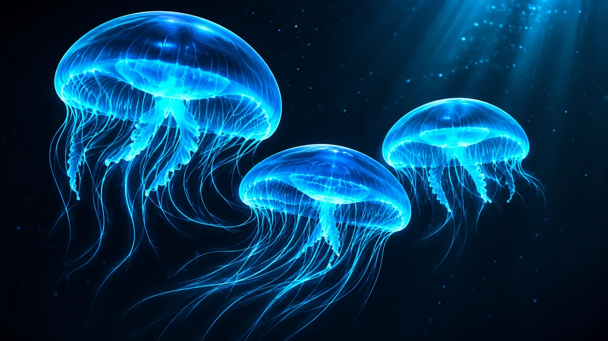
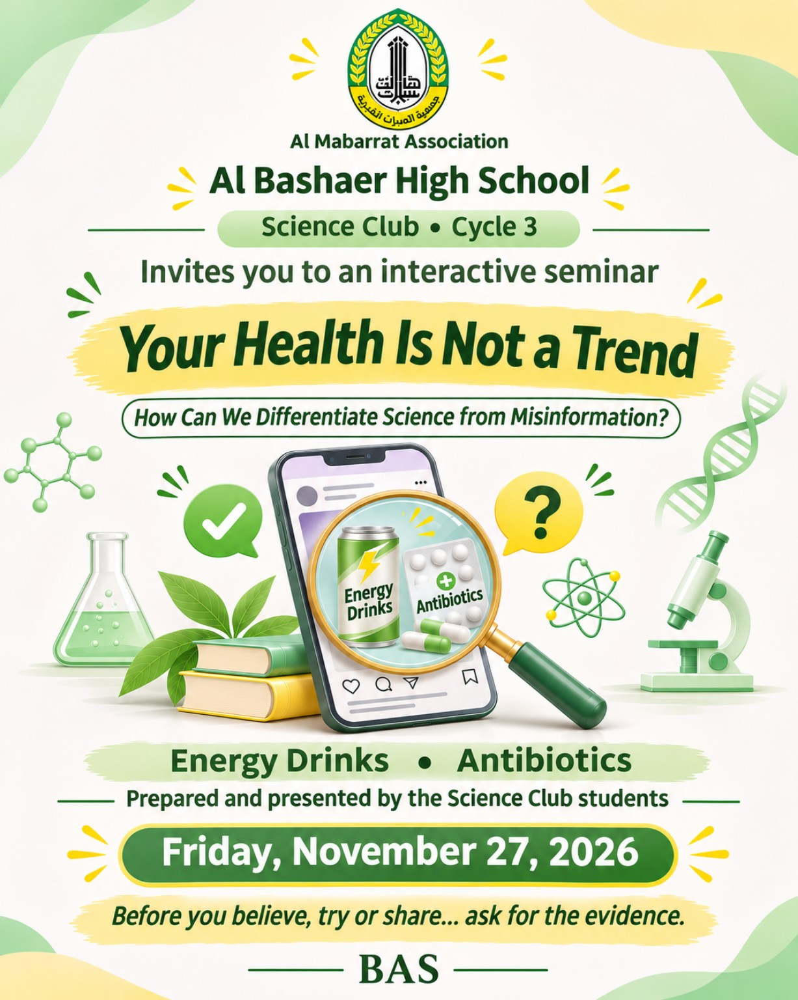

Al Bashaer High School · Cycle 3
Bashaer Science School Magazine
Explore by topic
Tap a light bulb to open its section.
Swipe sideways to see all nine sections.
Science UnlockedEveryday questions
Science on a PlateFood and chemistry
Future LabSpace and technology
Planet EarthClimate and environment
Mind LabThe brain and perception
Inside LifeThe body and living things
Science VoicesInterviews and perspectives
Science in ActionExperiments and discoveries
Science PlaygroundQuizzes and challenges
Article Lab
Browse all issuesScroll sideways to see all the articles. Tap a test tube to open its article.
Loading articles…
Upcoming Science Club Seminar

Skills Builder
Universal Framework 2.0Choose a skill to see what it means.
Editor’s Note
Welcome to the very first issue of BAS, a science magazine created by curious students who believe that science is not just something we learn in the classroom—it is all around us.
In this issue, our young scientists invite you to explore fascinating questions, discover surprising facts, and look at the world through a scientific lens. From the human body and nature to space, technology, and the mysteries of everyday life, each article is a journey of curiosity and discovery.
BAS is more than a magazine. It is a space where students can ask questions, investigate ideas, share knowledge, and turn their curiosity into scientific stories.
We hope that every page makes you wonder, “Why?”, “How?”, or simply “What if?”—because every great scientific discovery begins with a question.
So, turn the page, stay curious, and enjoy discovering science with us!
Welcome to BAS — where curiosity becomes discovery.
مرحبًا بكم في العدد الأول من BAS، المجلة العلمية التي أبدعها طلاب شغوفون بالمعرفة ويؤمنون بأن العلم ليس مجرد مادة نتعلمها في الصف، بل هو موجود من حولنا في كل مكان.
في هذا العدد، يدعوكم علماؤنا الصغار إلى استكشاف أسئلة شيّقة، واكتشاف حقائق مفاجئة، والنظر إلى العالم من منظور علمي. من جسم الإنسان والطبيعة إلى الفضاء والتكنولوجيا وأسرار حياتنا اليومية، كل مقال هو رحلة في عالم الفضول والاكتشاف.
BAS ليست مجرد مجلة، بل هي مساحة يستطيع فيها الطلاب طرح الأسئلة، واستكشاف الأفكار، ومشاركة المعرفة، وتحويل فضولهم إلى قصص علمية.
نأمل أن تجعلكم كل صفحة تتساءلون: «لماذا؟» أو «كيف؟» أو ببساطة «ماذا لو؟»، لأن كل اكتشاف علمي عظيم يبدأ بسؤال.
لذلك، اقلبوا الصفحة، حافظوا على فضولكم، واستمتعوا باكتشاف العلم معنا!
أهلًا بكم في BAS — حيث يتحول الفضول إلى اكتشاف.
Science Club
See what Cycle 3 students do together, from hands-on experiments to science challenges.
Explore the club